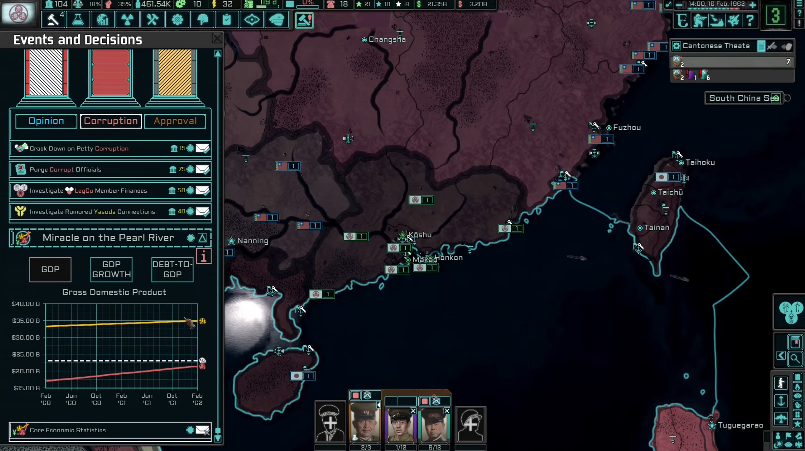
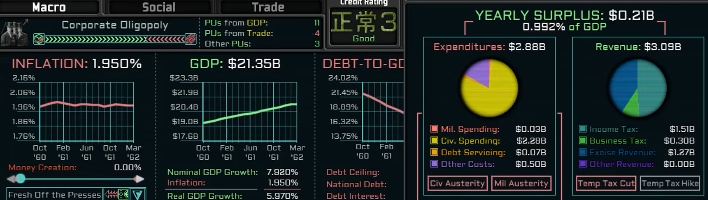
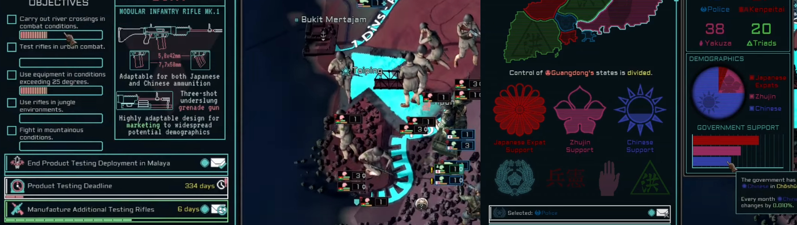

Game Total-Conversion Project
Over the past couple of years, I pursued my interest outside my degree courses by working in a team leadership position on a large collaborative total-conversion game modification project of over 200 members and over half a million players.
Key features:
- A successfully released game
- Project management
- Designing, coding and testing game mechanics
- For an example of mechanic design, click here

The Project:
This project converts the WW2 grand strategy of Hearts of Iron 4 into a both strategic and narrative cold war game.
After a successful release, a Paradox Interactive Dev-Diary less than a year later marked us as the third largest total conversion mod for the game.
The project overhauls numerous features, including the creation of a global economic system more suitable to a cold war simulation.
Other features include a total visual overhaul, original soundtrack and experimental usage of game features.
These all combine to change the atmosphere, gameplay and objectives of the game to create a new, unique experience which continues to expand.

Project Management:
I got to work designing and implementing content across numerous teams, in roles ranging from programming and art to team leadership.
Through this I developed problem-solving and communication skills, coordinating with teammates of different disciplines to create a game we could enjoy.
My work in the team varied over time. This included expanding standard game-features for new content, developing new game mechanics and finding creative ways to repurpose vanilla features to solve problems.
I also enjoyed lots of practice in both the visual and practical design of GUIs, and through close communication with our QA team I could review and improve upon everything I was working on.
Alongside varying involvement in upcoming updates, I was responsible for management of the teams completion and release of the long-developed 1.3 update, involving much GUI development, new mechanics and improving existing content.
I was also in charge of a major overhaul to the tech system for this update, building on overhauls from previous updates which integrated new game features, adapting them to better suit our custom tech system.
During this work, I managed the expansion of our tech team to meet rising demand for stylised GFX, as the number of custom GUIs for these and future content continued to rise.

Mechanic Design and Implementation:
I was also thoroughly involved in the production of the 1.4 update, "Silicon Dreams", in which I was able to further experiment with testing new mechanics to change the way in which the game is played.
These mechanics, including the implementation of special objectives within combat to change the ordinarily repetitive base-game gameplay loop, were well received and may help to guide design of future content.
This update also saw the first significant use of custom shader code within interfaces for depicting regions. This has shown great potential for replacing previous labour-intensive methods involving numerous image frames.
All in all;
I enjoyed every moment getting to work on a game of this scale, and with such a wonderful team.
It was an invaluable experience and taught me a lot about teamwork, organisation and everything that goes into making a game.
My time in this project has helped enable me to practice project management and time management, research and planning.
I also learnt the importance of proper documentation, especially in a volunteer project where there is inevitably a high turnover rate of members who will need to familiarize themselves with existing plans and code.